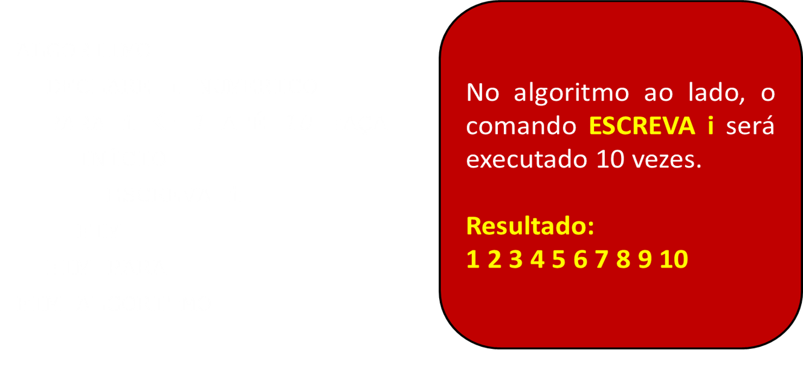
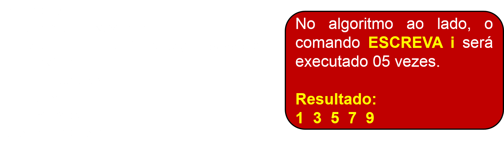
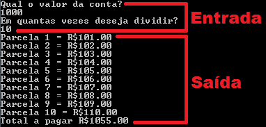

Prof. Dr. Raulcézar Alves
raulcezar@gmail.com
Estruturas de Repetição
- Utilizada quando um trecho do algoritmo ou até mesmo o algoritmo inteiro precisa ser repetido.
- O número de repetições pode ser fixo ou atrelado à uma condição. Assim, existem estruturas específicas para tais repetições.
Estruturas de Repetição
- Estrutura Repita...Para: estrutura de repetição para um número definido de repetições.
- Estrutura Enquanto: estrutura de repetição para número indefinido de repetições.
- Estrutura Repita...Enquanto: estrutura de repetição para um número indefinido de repetições e validação no final.
Estruturas de Repetição PARA (Portugol)
- O comando1 e o comando2 serão executados utilizando a variável i como controle, e seu conteúdo vai variar do valor inicial até o valor final.

Estruturas de Repetição PARA (Portugol)
- É utilizado principalmente quando se sabe o número de vezes que um trecho do algoritmo deve ser repetido.

Estruturas de Repetição PARA (Portugol)
- É utilizado principalmente quando se sabe o número de vezes que um trecho do algoritmo deve ser repetido.

Estruturas de Repetição PARA (C)
Estruturas de Repetição PARA (C)
Estruturas de Repetição PARA (C)
Qual a saída?Estruturas de Repetição PARA (C)
 Qual a saída?Exercícios
- 01: Programa que imprime somente os números pares entre 0 e 20, em ordem crescente.
Exercícios
- 02: Programa que imprime somente os números ímpares entre 0 e 10, em ordem decrescente.
Exercícios
- 03: Programa que lê um valor N e imprime seu fatorial. Sabe-se que:
- n! = n x (n-1) x (n-2) x ... x (n-(n-1))
- Por exemplo 4!
- 4!= 4 x (4-1) x (4-2) x (4-3)
- 4!= 4 x 3 x 2 x 1
- 4!= 1 x 2 x 3 x 4
- 4!= 24
Exercícios
- 04: Programa que lê o valor de uma conta e número de parcelas, imprimindo o valor de cada parcela com juros e o total final. Sabe-se que a cada parcela, é acrescido 1% de juro, por exemplo:
